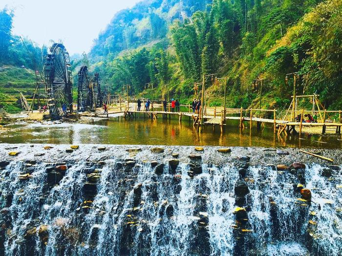
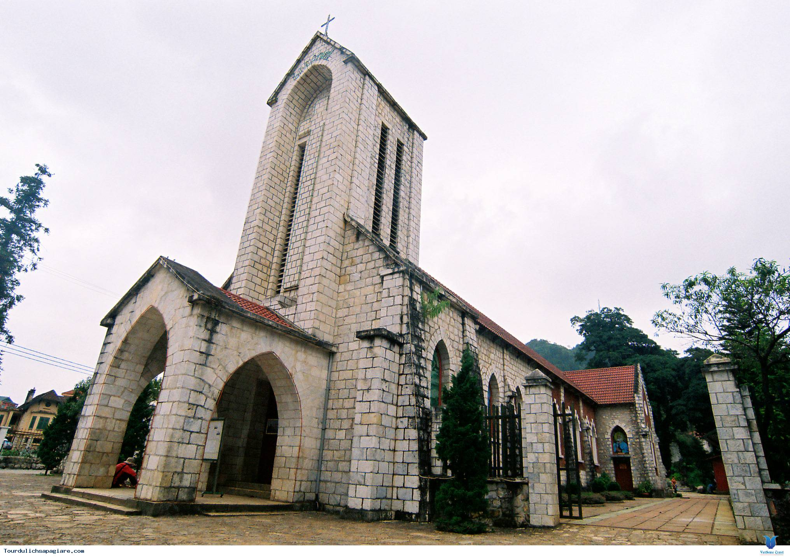
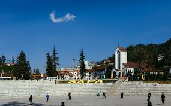

SAPA IN MY LIFE
Thị trấn Sapa
Cảnh đẹp Du Lich Sapa mùa hè thơ mộng, núi rừng nguyên sơ như tranh vẽ, thời tiết đặc trưng mùa đông trên ngọn núi fansipang kỳ vĩ hứa hẹn một Tour du lịch khám phá.Phong cảnh thiên nhiên của Sa Pa được kết hợp với sức sáng tạo của con người cùng với địa hình của núi đồi, màu xanh của rừng, như bức tranh có sự sắp xếp theo một bố cục hài hoà tạo nên một vùng có nhiều cảnh sắc thơ mộng hấp dẫn .
Đỉnh Fansipan
Trong các tour du lịch Sa Pa, chinh phục đỉnh Fansipan là một hành trình leo núi khám phá mà bất kì ai cũng khao khát được đặt chân tới. Với độ cao 3. 143m so với mực nước biển, đỉnh Fansipan hùng dũng và quyến rũ hết thảy những trái tim khao khát chinh phục và khao khát trải nghiệm.
Tòa nhà Sun Plaza
Địa điểm Sun Plaza Sapa mang hơi thở của phong cách kiến trúc Châu Âu tạo nên điểm nhấn nổi bật và thật khác biệt giữa thiên nhiên hoang sơ của Sapa. Một chút hiện đại giữa đất trời núi non hùng vĩ tạo nên sự hấp dẫn và lôi kéo bao ánh nhìn của các du khách khi đến với nơi đây.
Bản Cát Cát
Gần trung tâm thành phố, cách khoảng 2km đi về phúa núi Fanxipan, bản Cát Cát là điểm đến lý tưởng cho mọi du khách khi tới Sapa. Bản làng này là khu du lịch sinh thái lý tưởng, thuận tiện cho việc đi lại, ngắm nhìn dãy núi Hoàng Liên Sơn chập chùng giữa ngàn mây núi sẽ mang đến cảm giác cực đã cho những ai yêu thiên nhiên, yêu con người Việt Nam.
Một số hình ảnh khác
Con suối chạy vắt qua bản
Nhà thờ đá Sapa
Beauty of nature
Thanks You for reading